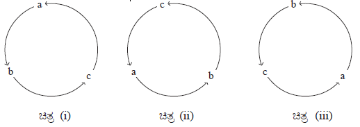
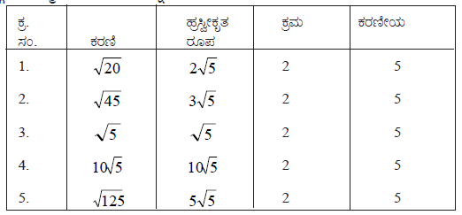

| Home | |
| SEARCH |
1.ಭಾಗಾಕಾರ ಕ್ರಮದಲ್ಲಿ ಮ.ಸಾ.ಅ.ವನ್ನು ಕಂಡುಹಿಡಿಯುವಾಗ ಅನುಸರಿಸಬೇಕಾದ ಹಂತಗಳು1) ಕೊಟ್ಟಿರುವ ಬೀಜೋಕ್ತಿಗಳನ್ನು ಘಾತಗಳ ಇಳಿಕೆ ಕ್ರಮದಲ್ಲಿ ಬರೆಯಬೇಕು. 2) ಬೀಜೋಕ್ತಿಗಳಲ್ಲಿನ ಮೊದಲನೆ ಪದಗಳ ಘಾತಾಂಕಗಳು ಒಂದೇ ಆಗಿದ್ದರೆ ಸಹಾಪವರ್ತನವು ಕಡಿಮೆ ಇರುವುದನ್ನು ಭಾಜಕವನ್ನಾಗಿ ಪರಿಗಣಿಸಬೇಕು. 3) ಭಾಗಾಕಾರ ಕ್ರಿಯೆಯನ್ನು ಮುಂದುವರೆಸಬೇಕು. 4) ಕೊನೆಯಲ್ಲಿ ಉಳಿಯುವ ಭಾಜಕವು ಬೀಜೋಕ್ತಿಗಳ ಮ.ಸಾ.ಅ. ಆಗಿರುತ್ತದೆ. ಭಾಗಾಕಾರದಲ್ಲಿ ಬರುವ ಶೇಷವು ಸೊನ್ನೆ ಆಗಿರದೆ ಸ್ಥಿರ ಸಂಖ್ಯೆ ಆಗಿದ್ದರೆ ಬೀಜೋಕ್ತಿಗಳ ಮ.ಸಾ.ಅ. 1 ಆಗಿರುತ್ತದೆ. ಅಂದರೆ ದತ್ತ ಬೀಜೋಕ್ತಿಗಳು ಪರಸ್ಪರ ಅವಿಭಾಜ್ಯ ಬೀಜೋಕ್ತಿಗಳಾಗಿರುತ್ತವೆ. ದತ್ತ ಬೀಜೋಕ್ತಿಗಳನ್ನು ಸುಲಭವಾಗಿ ಅಪವರ್ತಿಸಲು ಸಾಧ್ಯವಿಲ್ಲದಿದ್ದರೆ, ಅವುಗಳ ಮ.ಸಾ.ಅ.ವನ್ನು ಭಾಗಾಕಾರ ಕ್ರಮದಲ್ಲಿ ಕಂಡುಹಿಡಿಯಬಹುದು. 2. ಭಾಗಾಕಾರ ಕ್ರಮದಿಂದ ದತ್ತ ಬೀಜೋಕ್ತಿಗಳ ಲ.ಸಾ.ಅ. ಕಂಡುಹಿಡಿಯುವುದು.ದತ್ತ ಬೀಜೋಕ್ತಿಗಳನ್ನು ಸುಲಭವಾಗಿ ಅಪವರ್ತಿಸಲು ಸಾಧ್ಯವಿಲ್ಲದಿದ್ದಾಗ A*B=H*L ಸಂಬಂಧವನ್ನು ಉಪಯೋಗಿಸಿ ಲ.ಸಾ.ಅ. ಕಂಡುಹಿಡಿಯಬಹುದು. ಎರಡು ಬೀಜೋಕ್ತಿಗಳ ಲ.ಸಾ.ಅ.ವನ್ನು ಭಾಗಾಕಾರ ಕ್ರಮದಲ್ಲಿ ಕಂಡುಹಿಡಿಯುವಾಗ ಯಾವುದಾದರೊಂದು ಬೀಜೋಕ್ತಿಯನ್ನು ಮ.ಸಾ.ಅ. ದಿಂದ ಭಾಗಿಸಿ ಬಂದ ಭಾಗಲಬ್ಧವನ್ನು ಉಳಿದ ಬೀಜೋಕ್ತಿಯೊಂದಿಗೆ ಗುಣಿಸಿ ಗುಣಲಬ್ಧವನ್ನು ಕಂಡುಹಿಡಿಯಬೇಕು. L=A/H*B ಅಥವಾ L=A*B/H 3.ಚಕ್ರೀಯ ಸಮಸಂಗತಿಈ ಕೆಳಗಿನ ಚಿತ್ರಗಳನ್ನು ಗಮನಿಸಿ. ಮೇಲ್ಕಂಡ ಚಿತ್ರಗಳಲ್ಲಿರುವಂತೆ a(b+c) + b(c+a) + c(a+b) ಬೀಜೋಕ್ತಿಯಲ್ಲಿ a,b ಮತ್ತು ಚರಾಕ್ಷರಗಳನ್ನು ಕ್ರಮವಾಗಿ ಬದಲಾಯಿಸಿ ಬರೆಯಿರಿ. ಅದು b(c + a) + c(a + b) + a(b + c) ಆಗುತ್ತದೆ. ಇದು ಕೊಟ್ಟಿರುವ ಬೀಜೋಕ್ತಿಗೆ ಸಮವಿದೆ. ∴ ಒಂದು ಬೀಜೋಕ್ತಿಯಲ್ಲಿ a, b ಮತ್ತು c ಗಳು ಮೂರು ಚರಾಕ್ಷರಗಳಾಗಿರುವಾಗ a ಯನ್ನು b,b ಯನ್ನು c, c ಯನ್ನು a ನಿಂದಲೂ ಬದಲಾಯಿಸಿ ಬರೆದಾಗ ಬರುವ ಬೀಜೋಕ್ತಿಯು ಕೊಟ್ಟಿರುವ ಬೀಜೋಕ್ತಿಗೆ ಸಮವಿದ್ದರೆ, ಆಗ ಕೊಟ್ಟಿರುವ ಬೀಜೋಕ್ತಿಯು ಚಕ್ರೀಯ ಸಮಸಂಗತಿಯನ್ನು ಹೊಂದಿರುತ್ತದೆ. 4.ಕರಣಿಗಳು (SURDS)ಕೊಟ್ಟಿರುವ ಪಟ್ಟಿಯಲ್ಲಿ ಕರಣಿಯ ಕ್ರಮ ಮತ್ತು ಕರಣೀಯಗಳನ್ನು ಗಮನಿಸಿ. ಈ ಕರಣಿಗಳ ಬಗ್ಗೆ ನಿಮ್ಮ ತೀರ್ಮಾನವನ್ನು ತಿಳಿಸಿ. ಈ ಕರಣಿಗಳಲ್ಲಿ ಕರಣಯ ಕ್ರಮಗಳು ಸಮವಿದ್ದು, ಕರಣೀಯಗಳು ಸಹ ಒಂದೇ ಆಗಿವೆ. ಆದ್ದರಿಂದ ಇವು ಸಮರೂಪ ಕರಣಿಗಳು. ಕರಣಿಗಳು ಹ್ರಸ್ವೀಕೃತರೂಪದಲ್ಲಿ ಒಂದೇ ಕ್ರಮವನ್ನು ಮತ್ತು ಸಮಕರಣೀಯಗಳನ್ನು ಹೊಂದಿದ್ದರೆ ಅವುಗಳು ಸಮರೂಪ ಕರಣಿಗಳು. ಈ ಕರಣಿಗಳಲ್ಲಿ ಕರಣಿಯ ಕ್ರಮಗಳು ಬೇರೆ ಬೇರೆ ಇದ್ದು, ಕರಣೀಯಗಳು ಬೇರೆ ಆಗಿವೆ. ∴ ಈ ಕರಣಿಗಳು ಅಸಮರೂಪ ಕರಣಿಗಳು ಸುಲಭರೂಪದಲ್ಲಿ ಕರಣಿಯ ಕ್ರಮಗಳು ಹಾಗೂ ಕರಣೀಯಗಳು ಬೇರೆ ಬೇರೆ ಆಗಿದ್ದರೆ ಅವುಗಳನ್ನು ಅಸಮರೂಪ ಕರಣಿಗಳೆನ್ನುವರು. 5. ಕರಣಿಗಳ ಸಂಕಲನ ಮತ್ತು ವ್ಯವಕಲನ* ಹ್ರಸ್ವೀಕೃತ ರೂಪದಲ್ಲಿ ಸಮರೂಪ ಕರಣಿಗಳ ಸಂಖ್ಯಾ ಸಹಗುಣಕಗಳನ್ನು ಸಂಕಲನ ಅಥವಾ ವ್ಯವಕಲನ ಮಾಡಬಹುದು. * ಅಸಮರೂಪ ಕರಣಿಗಳ ಸಂಕಲನ ಅಥವಾ ವ್ಯವಕಲನ ಕ್ರಿಯೆಯಲ್ಲಿ ಎರಡು ಕರಣಿಗಳ ನಡುವೆ + ಅಥವಾ - ಚಿಹ್ನೆಗಳನ್ನು ಅಳವಡಿಸಬೇಕು. |